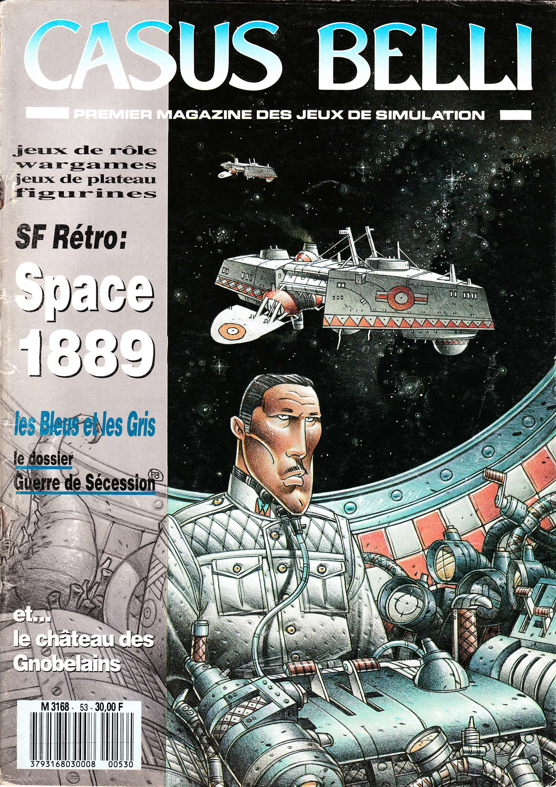

Casus Belli n°53, action ! pour notre numéro de la rentrée 1989 (septembre – octobre). C’est Fred Blanchard aux commandes pour l’illustration de couverture avec un numéro qui va largement traiter la dernière grosse production de GDW, Space 1889 :

Après un été où la France a été au centre de l’attention du monde avec les célébrations du bi-centenaire de la Révolution Française, et notamment une scénographie de Jean-Paul Goulde déjantée mais qui de mémoire aura laissé un souvenir bien plus mitigé que celle sur nos Jeux Olympiques de 2024, le réel reprend ses droits et les yeux du monde se braquent sur quelques centaines de km plus à l’est en Europe.
Tous les soubresauts de la première moitié de l’année vont en effet connaître leur dénouement accéléré et inattendu avec cette dernière partie de l’année. Le premier coup de tonnerre vient de la Hongrie qui, après avoir autorisé une brèche dans le Rideau de Fer, ouvre désormais officiellement sa frontière avec l’Autriche dès début septembre. L’exode des Allemands de l’Est, toujours sous la férule d’Erich Honecker, devient alors massif, rejouant en sens inverse une année 1961 avec la construction du Mur de Berlin, pour profiter de cette liberté encore perçue comme fragile et temporaire pour s’exiler en Allemagne de l’Ouest avant que cela ne devienne à nouveau impossible. Parallèlement, les premiers mouvements populaires débutent à Leipzig. Pendant de la Hongrie, la Pologne nomme de son côté un Premier Ministre non communiste, tandis que la Yougoslavie commence elle-même à craqueler sous le poids des revendications de nationalités qui vont s’exacerber avec la fin de cette ère : la Slovénie réclame son droit à l’autodétermination, en vue d’une prochaine sécession…
Ce vent de liberté en cette année symbolique 1989 continue de souffler aussi ailleurs dans le monde : on l’a vu en Amérique Latine, et encore en Afrique du Sud où l’élection de Frederik de Klerk en septembre accélère le démantèlement du régime d’apartheid encore officiel.
Un monde disparaît et annonce une chimérique Fin de l’Histoire maintenant que le modèle de la démocratie occidentale semble triompher sur le plan idéologique, et que celle-ci s’impose progressivement à tous les pays de la planète. Mais en se focalisant sur la désagrégation du futur ex-bloc soviétique, on ne devine pas certains signes qui sortent de ce carcan binaire et vont façonner le monde multipolaire de nos jours.
D’abord avec la relégation en arrière-plan de la Chine pour quelques années suite au massacre de la place Tien An Men qui a eu lieu un peu avant. Mais surtout avec un Maghreb et Proche-Orient qui restent la même cocotte-minute que celle actuelle, mais dont le modèle politique alors des Etats laïcs ou prétendument islamiques et sous le contrôle de l’appareil d’Etat (la Lybie) est à bout de souffle, et va favoriser des projets d’Islam politique au sein de mouvements populaires restés jusqu’ici marginaux. Ainsi en Algérie avec le FIS qui se légitimise en vue des élections à venir, en devenant un parti légal ; ou l’Afghanistan qui s’enfonce dans la guerre civile après le départ des soviétiques, ou encore un Irak qui se prétend une puissance majeure régionale après avoir résisté au nom des sunnites à l’Iran. Le terrorisme rampant lié à cette situation instable reste présent : après le drame de Lockerbie il y a moins d’un an, c’est au tour du vol 772 du DC10 d’UTA d’en être victime, avec toujours le pouvoir lybien en coulisse, prélude à un moyen d’action politique qui va dramatiquement s’étendre.
Le débat s’invite aussi en cette rentrée scolaire 1989 en France avec l’affaire du voile à Creil et une République, qui après avoir célébré les valeurs de Liberté, Egalité et Fraternité pendant l’été se retrouve empêtrée avec la dernière ajoutée : Laïcité. Faut-il que celle-ci garantisse la liberté de pouvoir afficher ses convictions religieuses au même plan pour tous, ou au contraire l’égalité de tous en les bannissant absolument ? Trois élèves sont exclues du collège avec cette rentrée pour port du voile, une première qui devient hyper médiatisée. Les médias s’embrasent sur ce qui va quitter le champ du fait divers isolé pour devenir un sujet de société majeur. La société civile s’invite au débat, en plus de la classe politique et de la justice, avec Malek Boutih le vice-président de SOS Racisme et Danielle Miterrand. Au final, le jugement de Salomon - où la Justice désavoue le proviseur de Creil, mais le Gouvernement renvoie la responsabilité aux chefs d’établissement - mécontente tout le monde et ouvre la porte à des débats passionnés pour de nombreuses années, et qui durent encore. Je vous mets un extrait de journal télévisé d’octobre 1989 mais les archives de la toile et le regard postérieur porté sur cette affaire et les acteurs de l’époque, notamment Malek Boutih, est intéressant à ré-explorer sur cet événement largement disparu des mémoires.
Vidéo de l’INA - Journal Télévisé du 9 octobre : https://www.ina.fr/ina-eclaire-actu/vid … s-de-creil
Le reste de la rentrée en France se fait avec la même agitation sociale que l’année précédente (agents des finances, infirmières), annonçant une situation économique qui se détériore et vont faire de la décennie suivante des années moroses, où les promesses de la fin de cette décennie 1980 avec son nouveau contexte international seront déçues. Mais on en reparlera pour nos prochains numéros !
Passons maintenant au détail de ce numéro 53 qui annonce cette rentrée 1989. L’édito est sous une petite illustration qui montre que la batmania bat encore son plein, et est long, très long même pour parler de plein de trucs qu’on va évoquer ici. Mais le morceau de choix est l’annonce de la parution prochaine de SimulacreS qui va devenir le nouvel étendard de Casus pour l’initiation (et depuis repris opportunément dans Geek Magazine).
Avec la fin de l’été, plein de débriefs d’événements : l’édition annuelle du fameux FSO de Toulon, le GN L’Arc et la Faux à Parthenay organisé par Paradoxes, la société d’organisation de GN d’Anne Vétillard à l’époque, ou un autre GN à Compiègne dans le prolongement du Killer organisé précédemment et qui donne naissance en parallèle à la Guilde de Picardie gérée par deux fameux Olivier. On a aussi droit à un détour par les US avec la tenue d’Origins (indépendamment de la GenCon) où Cyberpunk fait le buzz, Shadowrun apparaît timidement en avant-première, et où on trouvera évidemment avec cette année le Batman RPG de Mayfair, spin off commercial mais bien fichu du JDR DC Heroes déjà paru.
Sur les sorties plus en général, les annonces reprennent des couleurs : Hurlelune n°2 et Anashiva Reahana n°3 chez Dragon Radieux, en plus du jeu de plateau Aristo, European Entertainment pour les Divisions de l’Ombre chez Flamberge, du James Bond (Octopussy, l’Equipement) et du Warhammer (Middenheim) chez Jeux Descartes en attendant qu’Illuminati et Civilisation viennent se loger sous le sapin de Noël maintenant qu’ils sont prévus. Siroz sort la 2ème édition de Berlin XVIII pour en faire désormais un vrai jeu, et pas seulement un supplément Universom. Ailleurs c’est TSR qui réaccélère : sortie du Monstruous Compendium pour boucler le triptyque, développement des Royaumes Oubliés et redémarrage sur Greyhawk depuis le départ de Gygax.
Où en est-on d’ailleurs sur la VF de AD&D2 ? Comme Casus l’annonce c’est le cataclysme de cet été : Transecom a perdu sa licence au 31 juillet alors que l’éditeur français avait repris une belle dynamique – traduction de la 2ème édition (on en reparlera dans le prochain numéro), les Gazeteers de D&D (malheureusement limitées aux deux premiers – Karameikos et Yluaram), le module Ravenloft, Eauprofonde et le Nord. Même si Casus indique que tout risque de rester en stand by jusqu’à début 1990, il se veut optimiste en disant qu’un éditeur français va forcément se positionner pour récupérer cette manne. On verra dans quelques mois que ce sera davantage de la soupe à la grimace qu’une manne, pour plein de raisons pas bien réjouissantes.
Le reste de la production US est elle-même plus fournie avec l’impulsion des grandes conventions de l’été : The Great Old Ones pour Cthulhu chez Chaosium, GURPS Conan chez SJG, le Galaxy Guide 1 pour Star Wars chez WEG qui a aussi compris que les consommateurs plébiscitent les scénarios, même quand ils sont pourris en ne sortant pas moins Otherspace, Scavenger Hunt et Battle for the Golden Sun. Enfin, on parlait de Games Workshop qui ne faisait plus de JDR et des Crados dans le numéro précédent, et voilà que l’éditeur UK propose les jeux Trolls avec des K7 de chants trolls, ou dixit Casus des musiques « où des adultes fin beurrés chantent n’importe quoi ».
Dans les critiques, @Tristan célèbre avec raison la VF de Genertela et le premier Hurlelune. Pierre Lejoyeux est plus circonspect sur la VF d’un Cthulhu 90 maintenant complètement périmé. Pierre Rosenthal chronique les premiers suppléments du phénomène Cyberpunk, notamment Hardwired issu du roman Câblé de Walter Jon Williams, lui-même précédemment auteur de JDR : Pierre profite donc de cette critique pour espérer de prochains rapprochements entre la littérature fantastique et le JDR, qui malgré les efforts de la rubrique de Roland Wagner peine à sortir du regard condescendant sur notre loisir que les auteurs de SF ont.
La proximité du wargame avec le JDR reste encore bien présente, en témoignent les autres critiques disponibles : d’abord pour le Space 1889 avec le supplément Soldier’s Companion de GDW, éditeur de wargame, où Pierre Lejoyeux relève que sur les 193 pages du supplément, seulement 3 sont spécifiques au JDR  et Laurent Henninger aborde dans ce numéro 53 Suprématie 2, la version augmentée du Risk++ qu’est le jeu Suprématie paru chez Descartes, et un improbable Soviet System, sorte de Trivial Pursuit édité MB alors que l’Empire soviétique vacille.
et Laurent Henninger aborde dans ce numéro 53 Suprématie 2, la version augmentée du Risk++ qu’est le jeu Suprématie paru chez Descartes, et un improbable Soviet System, sorte de Trivial Pursuit édité MB alors que l’Empire soviétique vacille.
Comme je disais enfin avec la couverture, Space 1889 se taille la part du lion puisqu’il sera la seule épreuve du feu de ce numéro, avec en plus un scénario d’introduction et une aide de jeu qui donnent envie de redécouvrir ce jeu de qualité, furieusement victorien et steampunk, avant que le genre steampunk ne prenne son nom et devienne une sorte de déversoir foutraque où mettre tous les délires pourvu que ça ait de la vapeur et des crinolines.
C’en est fini pour la revue de la production de ce bimestre et intéressons-nous maintenant à la partie plus rédactionnelle. Premier gros morceau, le courrier avec une tribune signée d’une mystérieuse Cornélia. Présentée comme une personne qui a écrit pas mal de scénarios et d’aides de jeu, j’ai longtemps pensé qu’il s’agissait d’Anne mais ça ne colle pas : elle précise qu’elle a commencé le JDR il y a 7 ans (donc en 1982) et ouvre une tribune pour promouvoir l’absence de système, qui préfigure les tendances des années 1990, mais n’est pas du tout system matters! Cela va faire couler pas mal d’encre dans les numéros suivants. Après avoir percé le mystère du Barbare Déchaîné et de Brigitte Brunella, qui m’aidera à trouver cette fameuse Cornélia ?
Pour revenir au contenu de la tribune et des réactions à suivre, eh oui, même sans forum, il y avait déjà le 3615 CASUS pour poster des réponses enflammées, ou même la rubrique Courrier désormais présente à chaque numéro (ici deux pages, dont celle savoureuse d’un lecteur qui en cette année 1989 estime que l’URSS est un pays beaucoup plus humanitaire que les USA). Cela introduit donc un alter ego plus paisible que le Barbare (qui est d’ailleurs absent de ce numéro) avec le Moine Thatyon, dont la signature était aussi celle de Pierre Rosenthal si je ne fais pas erreur.
Les inspis sont à nouveau en fin de la revue, avec la Ludotique. Dans les romans, Roland a un enthousiasme mesuré : il étrille un certain nombre de romans, et parmi les ouvrages recommandés on notera surtout des classiques : du Burroughs réédité, du Pern par Anne McCaffrey, du Marion Zimmer Bradley et du Philip K Dick (ses nouvelles avant la parution de ses premiers romans. Seuls Jean-Marc Ligny avec la série des Voleurs de Rêves surnage dans les nouveautés qui trouvent grâce aux yeux de Roland.
L’Actualité BD n’est pas en reste avec des titres un peu confidentiels ou qui n’ont pas traversé les décennies : Orkaëlle par Taffin, L’Or du Temps, La Geste de Gilles de Chin ou Le maître des brumes. Dans les plus classiques, la Batmania permet cependant de sortir les 4 tomes de la série Enfer Blanc, et V pour Vendetta voit la parution de son tome 3. Seule la Ludotique (qui va bientôt disparaître après la rubrique Inspi Ciné) a des couleurs en mettant des titres phare de l’époque à l’honneur : la première version de SimCity, Populous, et une annonce de North and South à venir, le jeu inspiré par la BD des Tuniques Bleues.
Passons au matériel de jeu avec pas mal de matière. D’abord avec AD&D : pour accompagner la transition vers la 2ème édition, Casus propose une aide de jeu fournie pour gérer la migration des différentes classes de perso de la 1ère vers la 2ème édition, tout en proposant un synopsis d’une campagne planaire pour mettre en jeu tout ceci, et une aide de jeu poour aller plus loin avec les prêtres et les magiciens spécialisés. Sans manquer une page d’interview faite lors du passage de Gygax à Paris à l’occasion de sa collaboration avec Infogrames : c’est touffu comme du Gygax, ça vomit sur la 2ème édition comme du Gygax (avec un peu de complaisance coupable de Casus), et ça refait le match comme du Gygax en se donnant le beau rôle. A lire pour le souvenir ! A côté de ceci, un Profession : Maître du Futur Antérieur par Tristan que j’avais relue à l’occasion de la sortie de la nouvelle version de Hawkmoon et qui est toujours aussi bon. Enfin, suite du numéro précédent, on continue sur les PNJ et portraits de Gnobelains, et l’univers s’élargit avec un Bâtisse & Artifices par la fameuse Brigitte Brunella consacré à leur château et la présentation de leur moinde Goferfinker.
Sur l’encart scénario, on trouve plein de propositions tentantes (Rêve de Dragon, Stormbringer, AD&D, James Bond 007) mais qui sont assez sages et basiques, un peu tous orientés Dungeon Crawl, ou en tout cas très linéaires. Le Stormbringer est de Tristan et pour la 1ère édition : il ravirait @nonolimitus mais il ne faudra pas trop lui en demander (au scénario, pas à @nonolimitus 😄 ). Idem pour le Rêve de Dragon, toujours inspiré mais avec un développement assez sommaire et qui se finit comme un Donjon : un cran inférieur que la production du numéro précédent mais pourquoi pas pour faire découvrir RdD ? Le AD&D est de Denis Beck mais n’est plus dans Laelith (il est pourtant repris dans le Recueil de BBE), et est lui-même très classique par rapport à ce qu’on a pu voir dans sa production antérieure. Quant au James Bond 007, c’est le plus atypique des quatre : mais à part le fait qu’il est issu d’un scénario de tournoi, il se révèle vraiment pas fameux. Donc pas de gros coup de cœur ou madeleine de Proust particulière avec ce numéro.
Les jeux de plateau pour ce bimestre se résume à Axis & Allies, sorte aussi de Risk++ dédié à la 2ème Guerre Mondiale et chaudement recommandé par Frank Stora. Bien qu’édité par MB, dommage qu’il ne soit pas sorti en français. Enfin, la section wargame est consacrée au très instructif (et très documenté dans les wargames d’Outre Atlantique) conflit de la Guerre de Sécession, avec notamment un dossier bref mais dense sur les bouleversements des armements militaires de cette période (dont on peut dire que la Guerre de Crimée en avait été la répétition). Vu la profusion de wargames publiés par nos cousins ricains sur cette période traumatisante de leur Histoire, Casus tente de faire une revue thématique à défaut d’être exhaustive : les jeux de Richard Berg, les simulations stratégiques, l’échelon intermédiaire avec les jeux se focalisant sur une campagne, les batailles navales avec l’introduction des premiers cuirassés et les jeux d’histoire avec les figurines. Comme d’habitude avec cette section dans Casus, c’est copieux et robuste, et ça pourra être de première utilité pour Space 1889 avec le reste du numéro.
La boucle de Space 1889 étant bouclée, c’est ici que se se termine la lecture de ce bimestre septembre – octobre !